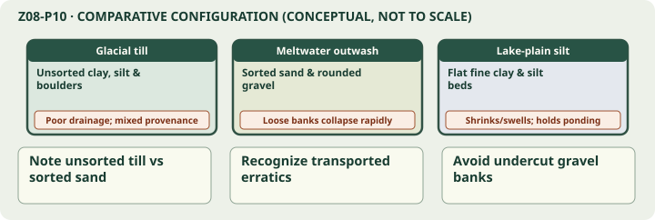

Z08-P10 · Rocks, minerals and materials · New manuscript
Glacial Till, Outwash Plains and Erratic Cobble Provenance
Interpret mixed glacial sediments so cobble composition, drainage behavior, and excavation instability are not misread.
When it applies · Moraines, eskers, outwash gravel plains, and glacial lake basins across the Upper Midwest.
Equipment · Surficial geology map, hand lens, metric scale.

Actions
- Distinguish unsorted clay-to-boulder glacial till from sorted stratified sand and gravel outwash deposited by meltwater streams.[R02]
- Expect Canadian Shield granite, iron-formation cobbles, and chert nodules far south of their source bedrock due to ice-sheet transport.[R02, R05]
- Keep clear of steep gravel-pit walls and undercut stream banks because unconsolidated glacial drift slumps rapidly without warning.[R02, R11, R16]
Failure recognition · Digging into steep glacial sand banks or assuming sorted cobbles reflect uniform local bedrock causes bank collapse and misidentification.[R02, R11, R16]
Verify · Field notes distinguish sorted outwash from unsorted till and maintain safe setback from vertical drift faces.[R02, R16]
Stop or change course · Stop approaching overhanging gravel cuts, active borrow pits, or slumping riverbanks.[R11, R16]
Evidence and editorial notes
- R02 · Minnesota DNR · Minnesota Geology and Glacial History Overview (Current web edition)
- Section: Glacial drift and landscape materials · Conditions: Glacial till, moraines, outwash, and lake-plain deposits
Support: Glacial transport mixes erratics and cobbles from distant source formations across Minnesota soils and stream beds.
Limitations: Cobble location does not prove local bedrock origin or uniform internal stone integrity. · Conflicting evidence: None noted.
Editorial note: Separates erratic cobbles from bedrock strata. · Specialist reviewer: Quaternary geologist
Primary source · checked 2026-11-25
Current assessment · A04-R02 (2026-11-25) · Bounded support confirmed from an alternate source (A04): Long-distance ice transport and mixed deposits are supported. The evidence cannot trace individual cobbles without local work. Limits: Specialist review PENDING (Quaternary geologist); publication HOLD. All release decisions pending. - R05 · Minnesota DNR · Rocks and Minerals of Minnesota Educational Guide (Current web edition)
- Section: Chert, jasper, agate, and quartz occurrences · Conditions: Upper Midwest siliceous cobbles and sedimentary nodules
Support: Cryptocrystalline quartz varieties (chert, flint, jasper, agate) are hard silica rocks showing conchoidal fracture rather than planar cleavage.
Limitations: Visual similarity to fine-grained quartzite, basalt, or glass does not confirm thermal stability or structural suitability. · Conflicting evidence: None noted.
Editorial note: Anchors Z08 siliceous stone identification. · Specialist reviewer: Geologist and materials specialist
Primary source · checked 2026-11-25 - R11 · Minnesota DNR · Lake Superior Agate and Public-Land Rock Collecting Guidelines (Current web edition)
- Section: Lawful public-land gravel-pit and road-cut rock collecting limits · Conditions: Unrestricted public gravel areas and authorized private land
Support: Where lawful, rock hounding requires landowner permission on private land and compliance with local safety and collecting limits.
Limitations: Private property, active quarries, road right-of-way hazards, and tribal lands carry separate prohibitions and trespass penalties. · Conflicting evidence: None noted.
Editorial note: Clarifies lawful vs prohibited rock collection. · Specialist reviewer: Public-lands and legal reviewer
Primary source · checked 2026-11-25 - R16 · Minnesota DNR · Rocks and Minerals of Minnesota Educational Guide (Current web edition)
- Section: Sedimentary limestone, sandstone, and shale permeability · Conditions: Southeastern Minnesota karst, bluff, and river-valley sedimentary strata
Support: Sandstone, limestone, and shale differ sharply in cementation, porosity, and fissility, governing weathering and cliff instability.
Limitations: Karst bluffs and fractured shales shed rockfall unpredictably; visual inspection cannot certify slope or load stability. · Conflicting evidence: None noted.
Editorial note: Covers Upper Midwest sedimentary rock hazards. · Specialist reviewer: Engineering geologist
Primary source · checked 2026-11-25
Source lineage · New manuscript (Z08 P16 glacial geology) · Classification · New manuscript.